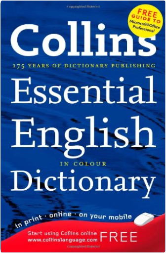
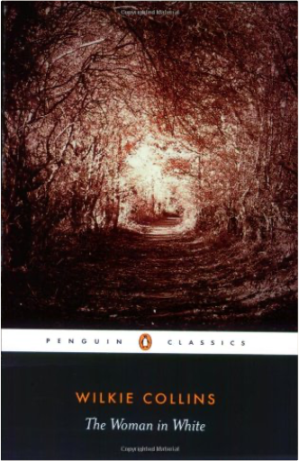
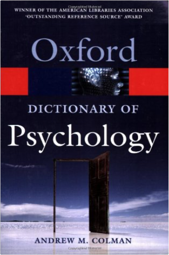
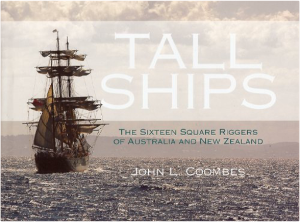
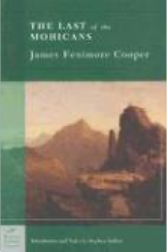

 Collins Essential English DictionaryCollins  With colour entry words, Collins Essential English Dictionary is the perfect language tool for every situation. The helpful usage notes, and practical supplement created in partnership with Microsoft Office(t), makes this hardback dictionary ideal for office use. Specially tailored to meet the needs of the office user, the new colour Collins Essential English Dictionary has comprehensive definitions, word tips to provide extra help with English usage, and the newest words. With colour entry words, phrases, inflections, and derivatives, the clear accessible layout ensures users can find the language they need when they need it. Collins Essential Dictionary also includes an invaluable supplement developed with Microsoft(R) to help you get the most from your Microsoft(R) 2007 software.  The Woman in WhiteWilkie Collins, Matthew Sweet Generally considered the first English sensation novel, The Woman in White features the remarkable heroine Marian Halcombe and her sleuthing partner, drawing master Walter Hartright, pitted against the diabolical team of Count Fosco and Sir Percival Glyde. A gripping tale of murder, intrigue, madness, and mistaken identity, Collins's psychological thriller has never been out of print in the 140 years since its publication.  A Dictionary of PsychologyAndrew M. Colman With over 11,000 entries, this comprehensive and up-to-date dictionary covers all branches of psychology. Clear, concise descriptions for each entry offer extensive coverage of key areas including cognition, sensation and perception, emotion and motivation, learning and skills, language, mental disorders, and research methods. The range of entries extends to related disciplines including psychoanalysis, psychiatry, the neurosciences, and statistics. Entries are extensively cross-referenced for ease of use, and cover word origins and derivations as well as definitions.  Tall Ships: The Sixteen Square Riggers of Australia and New ZealandJohn Coombes This beautifully photographed book enables the reader to step back in time, to a world when tall ships were the means by which continents were discovered, trade routes were opened up and new worlds were colonized. Today, the sixteen square-rigged tall ships that make their home in Australian and New Zealand waters have vastly different backgrounds and are used for a wide variety of purposes. From replica ships like the Bounty and the Endeavor to modern purpose-built sail training vessels like the Spirit of New Zealand, each ship inspires generations of sailors with her unmatched combination of grace and power. Some, like the James Craig (completed in 1874) and the Alma Doepel (built in 1903) stand as testimony to the craftsmanship and durability of old shipbuilding methods. They are living history, offering an insight into a way of life that would otherwise be lost forever. It is intended that, through a combination of lavish photography and insightful text, this book will bring to each tall ship the recognition it deserves. |  The Last of the MohicansJames Fenimore Cooper The Last of the Mohicans, by James Fenimore Cooper, is part of the Barnes & Noble Classics series, which offers quality editions at affordable prices to the student and the general reader, including new scholarship, thoughtful design, and pages of carefully crafted extras. Here are some of the remarkable features of Barnes & Noble Classics:All editions are beautifully designed and are printed to superior specifications; some include illustrations of historical interest. Barnes & Noble Classics pulls together a constellation of influencesbiographical, historical, and literaryto enrich each reader's understanding of these enduring works. During the fierce French and Indian wars, an adroit scout named Hawkeye and his companion Chingachgook weave through the spectacular and dangerous wilderness of upstate New York, fighting to save the beautiful Munro sisters from the Huron renegade Magua. The Practical Woodworker: A Comprehensive Step-by-Step Course in Working with WoodStephen Corbett This is the complete practical woodworking book - a definitive reference guide for the beginner and the accomplished woodworking enthusiast alike. It is shown in 1200 photographs and diagrams, with clear and easy-to-follow instructions. It is packed with information including a guide to timber, directions on buying and using hand and power tools, and advice for setting up your workshop. It offers everything you need to know is explained, such as the principles of ergonomics, planning, design and construction. You can learn about fixings and fastenings, basic and advanced techniques, making joints and wood finishing. It features over 20 beautiful projects to develop your skills, including a storage chest, CD rack and bookcase. Wood is one of the oldest known natural resources and its universal appeal remains timeless. As every woodworker will testify, to work with this material is to understand its subtlety and to appreciate its amazing versatility. This comprehensive practical book demonstrates the basic techniques of woodworking, providing the foundation on which to build your skills and knowledge. It begins with an introduction to timber and a guide to tools. Essential advice on getting started is given, as well as in-depth guides to fixings and fastening, joints, and advanced woodworking techniques. There are also 20 step-by-step projects from basic tasks, such as a wine rack, picture frame or bookshelf, to complex ventures for experts, such as a bedside cabinet, butcher's block or dining table.  In the bestselling tradition of The Map that Changed the World and Longitude comes the tale of a seventeenth-century scientist-turned-priest who forever changed our understanding of the Earth and created a new field of science.  Charles Dickens' great depiction of Victorian London, revolving around the case of Jarndyce and Jarndyce and laced with secrets, horrific crimes and love affairs, comes to the BBC this Autumn in a major new drama.  Marley's face. It was not in impenetrable shadow as the other objects in the yard were, but had a dismal light about it, like a bad lobster in a dark cellar. Ebenezer Scrooge is unimpressed by Christmas. He has no time for festivities or goodwill toward his fellow men and is only interested in money. Then, on the night of Christmas Eve, his life is changed by a series of ghostly visitations that show him some bitter truths about his choices. Dickens' most influential book is a funny, clever, and hugely enjoyable story. |

Doddridge Library
Collection Total:
417 Items
417 Items
Last Updated:
Apr 21, 2020
Apr 21, 2020


 Made with Delicious Library
Made with Delicious Library